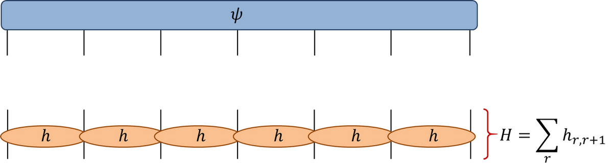

Numerical linear algebra is a huge topic. Here we’ll confine ourselves to how common operations are performed in NumPy and SciPy, and some applications in physics and elsewhere.
1 Linear algebra with NumPy
Multiplying matrices is easy in NumPy using np.matmul, although it can be done more briefly with the @ operator
import numpy as npA = np.random.rand(3, 3)B = np.random.rand(3, 3)np.matmul(A, B), A @ B
C = np.random.rand(2, 3)D = np.random.rand(4, 2)C @ D
ValueError: matmul: Input operand 1 has a mismatch in its core dimension 0, with gufunc signature (n?,k),(k,m?)->(n?,m?) (size 4 is different from 3)
Note that if either A or B has a rank greater than two, they will be treated as a stack of matrices, with each matrix in the last two indices. The usual broadcasting rules then apply to the remaining indices:
C = np.random.rand(4, 3, 3)D = np.random.rand(3, 3)(C @ D).shape
(4, 3, 3)
There are several library functions to perform matrix and vector algebra, including np.dot (dot product) np.vdot (dot product including complex conjugation), np.trace, etc.
The most versatile of these is np.einsum, which allows you to explicitly translate expressions using the Einstein summation convention that you’re all familiar with into NumPy code. Matrix multiplication is
This is great for people already familiar with the Einstein convention (like you): it’s very explicit.
If I have multiple tensor contractions to do there is the interesting question of the order in which they should be evaluated. That is: how should the loops be nested? As we saw in the lecture on complexity evaluating \(M_1 M_2\cdots M_n \mathbf{v}\) should be performed as \(O(N^2)\) matrix-vector multiplications, rather than \(O(N^3)\) matrix-matrix multiplications followed by a matrix-vector multiplication. In general, however, there is no efficient algorithm to find the best way to perform a specified set of contractions (Chi-Chung, Sadayappan, and Wenger (1997)). einsum can use a “greedy” algorithm (contracting the pair of tensors with the lowest cost at each step) to find a candidate scheme, but there is no guarantee this is optimal. Information on the contraction order used is provided by np.einsum_path.
Many matrix operations, such as inversion (np.linalg.inv), calculation of the determinant (np.linalg.det) or eigenvalues and eigenvectors (np.linalg.eig or np.linalg.eigh for hermitian problems) inherit their complexity from the \(O(N^3)\) complexity of matrix multiplication, so can be a major bottleneck in calculations
2 The power method and PageRank
If we are only concerned with the largest (or smallest) eigenvalue and eigenvector — as in the calculation of the ground state of quantum mechanical Hamiltonian, for example — there are other methods available with lower complexity. The simplest of these is the Power method. The idea is simply that starting from a generic vector \(\mathbf{b}_0\) and multiplying repeatedly by matrix \(A\), the resulting vector tends to the eigenvector with the largest (magnitude) eigenvalue. This is referred to as the dominant eigenvector and eigenvalue. It’s convenient to normalize each time, so the iteration takes the form
We have in fact already met this idea when we discussed Markov chains. In that case the relevant matrix was the matrix \(\mathsf{P}_{jk}=p(j|k)\geq 0\) of transition probabilities, which is stochastic:
\[
\sum_j \mathsf{P}_{jk} = 1.
\]
The property guarantees that the dominant eigenvalue is one and the dominant eigenvector has the interpretation of the stationary distribution.
2.1 PageRank
One interesting application of these ideas is Google’s PageRank algorithm (Page et al. (1999)) to assess the relative importance of webpages based on structure of links between them1.
Larry Page is happy he learnt about Markov chains
PageRank imagines a web crawler that probabilistically navigates between pages according to a transition matrix \(\mathsf{P}\). The stationary distribution \(\boldsymbol{\pi}\) satisfying \[
\mathsf{P}\boldsymbol{\pi} = \boldsymbol{\pi}
\]
can then be interpreted as giving a ranking, with page \(j\) more important than page \(k\) if \(\boldsymbol{\pi}_j>\boldsymbol{\pi}_k\).
A problem arises with this approach if the Markov chain is nonergodic, meaning that the state space breaks up into several independent components, leading to a nonunique stationary state. For example, if
The way out of this problem is to modify the Markov chain slightly to restore ergodicity and give a unique stationary state. At each step the crawler either moves as before with probability \(\alpha\) (followed by making a choice about which link to follow) or moves with probability \(1-\alpha\) to a random webpage. In this way the transition matrix of the overall Markov chain becomes
where \(\mathbf{e}^T= (1, 1, \ldots 1)\) and \(\mathbf{t}\) is a “teleporting” vector (usually \((1, 1, \ldots 1)/N\)) giving the probability of teleporting to each of the webpages. Since this matrix has positive (i.e. \(>0\)) entries the Perron–Frobenius theorem is restored and there is a unique stationary state (and hence ranking).
A further modification is required to teleport away from “dangling” webpages without any outgoing links).
2.2 Sparsity
The power method is the basis of more sophisticated algorithms such as Lanczos iteration: they are all based on the idea that matrix-vector products are to be preferred over matrix-matrix products, and provide only incomplete information about the eigenvalues and eigenvectors.
Further economies are possible when dealing with sparse matrices, meaning that most of the elements are zero (i.e. the density of non-zero elements goes to zero as the matrix size increases). Many matrices that we meet in physical applications (as well as in the above example of links between webpages) are sparse. For example, consider discretizing the Laplacian that appears in the Schrödinger equation:
(periodic boundary conditions) There’s no point iterating over a whole row to multiply this matrix into a vector representing the wavefunction if most of the elements are zero!
The basic idea behind sparse matrix algebra is that you should only need to store the non-zero values of a matrix (and their locations), and there are a variety of data structures to do so. Many of these are implemented in the scipy.sparse module, and allow matrix operations from scipy.sparse.linalg to be performed efficiently.
The alternative approach to building the sparse matrix explicitly is to pass the matrix operations in scipy.sparse.linalg a function which performs the matrix-vector multiplication. This is done by instantiating a LinearOperator with the function. We’ll see an example of this approach in Section 4.
3 Singular value decomposition
When dealing with large matrices we’re often faced with the need to truncate them in some way due to limits of finite storage space or processing time, and so the question arises of the “right” way to perform such a truncation. Here we’ll explore one way, which turns out to be natural in certain settings, based on the singular value decomposition (SVD).
SVD is an example of matrix factorization, in which a matrix is presented as a product of several factors, each having a particular form (orthogonal, triangular, etc.). In the case of SVD the factorization is
\[
M = U\Sigma V
\]
where \(U\) and \(V\) are unitary and \(\Sigma\) is diagonal with non-negative real entries. Note that SVD is completely general, and applies to rectangular matrices as well as square! If \(M\) is \(m\times n\), then \(U\) is \(m\times m\), \(V\) is \(n\times n\), and \(\Sigma\) is \(m\times n\). The diagonal elements \(\sigma_i\) of \(\Sigma\) are called the singular values and they number \(\min(m,n)\).
One geometrical interpretation of the SVD is as follows. The columns of \(V\) define an orthonormal basis \(\mathbf{v}_i\in \mathbb{C}^n\) (\(i=1,\ldots n\)). Likewise \(U\) defines a basis \(\mathbf{u}_i\in \mathbb{C}^m\)\(i=1,\ldots m\). If we act on \(\mathbf{v}_i\) with \(M\) (to the left) we get \(\sigma_i \mathbf{u}_i\).
The number of nonzero singular values is called the rank of the matrix: it is equal to the number of independent rows or columns (the two definitions are equivalent). For a general rectangular matrix the rank is \(\min(m,n)\).
Often we want to produce a low rank approximation to a matrix. This requires us to define how well the matrix is approximated by the lower rank matrix \(M_r\) of rank \(r<\min(m,n)\). One definition is that the Frobenius norm of the difference \(M-M_r\) should be as small as possible. The Frobenius norm \(\|A\|_{\mathrm{F}}\) of a matrix \(A\) is
With this definition we get the following simple result: the best low rank approximation of rank \(r\) is obtained by taking the SVD and discarding all but \(r\) largest singular values from the matrix \(\Sigma\). In other words, we retain only the \(r\) “most important” directions \(\mathbf{v}_i\in \mathbb{C}^n\) and \(\mathbf{u}_i\in \mathbb{C}^m\).
The SVD can be computed using np.linalg.svd. You might enjoy playing with this demo of image compression with SVD (this isn’t actually how images are compressed; it’s just a fun illustration)
3.1 SVD in quantum mechanics
SVD arises naturally in the quantum mechanics of composite systems: those that can be regarded as formed of two subsystems. For a simple, finite dimensional example, suppose that our system consists of two spins \(\mathbf{S}_A\) and \(\mathbf{S}_B\). The Hilbert space of each spin has dimension \(n_{A,B}\equiv 2S_{A,B}+1\), where \(\mathbf{S}_{A,B}\cdot\mathbf{S}_{A,B}=S_{A,B}(S_{A,B}+1)\) (e.g. 2 for spin-1/2).
A general state of our system lives in a \(n_A\times n_B\) dimensional Hilbert space and can be written in terms of basis vectors \(\ket{a}_A\) and \(\ket{b}_B\) for the A and B subsystems2 as
We can regard the components \(\psi_{ab}\) as a matrix and perform an SVD. As discussed above, this is equivalent to finding new orthonormal bases \(\ket{\tilde n}_{A,B}\) for the two spaces such that the action of \(\psi_{ab}\) on a basis vector of one subsystem maps it to a basis vector of the other, together with a rescaling. In this basis, the state \(\ket{\Psi_{AB}}\) can be written
Note there is a single sum, c.f. the double sum in Equation 1. This is called a Schmidt decomposition, although it is really just a restatement of the SVD.
The singular values — sometimes called the Schmidt coefficients in this case — quantify the entanglement of the state (see the 2022 Nobel prize). If there is only one nonzero singular value the state is a product state and there are no correlations between the two subsystems. Note that his might not have been evident in the original form Equation 1.
As a simple example consider the Bell state of two spin-1/2 subsystems. One example is
These are already written in Schmidt form and the two singular values are both \(\frac{1}{\sqrt{2}}\), indicating maximal entanglement.
3.2 Other applications of SVD
You might find it interesting to read about the applications of SVD in recommender systems, as described in this blog post by Simon Funk.
4 Quantum many body physics and tensor methods
In the previous section we have seen that the state of a quantum system composed of two subsystems can be represented (Equation 1) as a matrix or second rank tensor 3. This idea generalizes to \(N\) subsystems: the wavefunction may be regarded as a tensor of rank \(N\): \(\psi_{a_1,\ldots a_N}\). Each of the indices \(a_i\) ranges over the dimension of the Hilbert space of the corresponding subsystem.
There is a convenient graphical notation for these higher rank tensors, orignally due to Roger Penrose. A rank \(N\) tensor is represented as a blob with \(N\) legs:
Spin chains are among the simplest quantum mechanical many body models. The Hamiltonian couples the spins along the chain, with nearest neighbour couplings in the simplest case. The simplest such model is the Heisenberg chain for spin-1/2:
where \(\sigma^{x,y,z}\) are the usual Pauli matrices and the subscript \(j\) means that the matrix acts only the \(j\)th index of the wavefunction. Usually we impose periodic boundary conditions, so that \(\sigma^a_{j+N}=\sigma^a_j\). In the tensor diagram notation we have

State and Hamiltonian of a spin chain. Source: Glen Evenbly
The number of components of the wavefunction \(\psi_{a_1,\ldots a_N}\) is \(2^N\), which is responsible for the exponential growth of the complexity with increasing \(N\). Treating the eigenvalue problem
\[
H\ket{\Psi} = E\ket{\Psi}
\]
in terms of matrix-vector multiplication with complexity \(O(2^{2N})\) would be a very bad idea. Instead, we should take advantage of the structure of the problem, using the sparse structure of the Hamiltonian. \(H\) consists of a sum of local terms, each acting on only a neighbouring pair of sites. We are going to define a function that acts on the wavefunction with each of the local Hamiltonians \(h_{j,j+1}\) (this implementation uses np.tensordot rather than np.einsum):
# by Glen Evenbly (c) for www.tensors.net, (v1.2) - last modified 6/2019def doApplyHam(psiIn: np.ndarray, hloc: np.ndarray, N: int, usePBC: bool):""" Applies local Hamiltonian, given as sum of nearest neighbor terms, to an input quantum state. Args: psiIn: vector of length d**N describing the quantum state. hloc: array of ndim=4 describing the nearest neighbor coupling. N: the number of lattice sites. usePBC: sets whether to include periodic boundary term. Returns: np.ndarray: state psi after application of the Hamiltonian. """ d = hloc.shape[0] psiOut = np.zeros(psiIn.size)for k inrange(N -1):# apply local Hamiltonian terms to sites [k,k+1] psiOut += np.tensordot(hloc.reshape(d**2, d**2), psiIn.reshape(d**k, d**2, d**(N -2- k)), axes=[[1], [1]]).transpose(1, 0, 2).reshape(d**N)if usePBC:# apply periodic term psiOut += np.tensordot(hloc.reshape(d, d, d, d), psiIn.reshape(d, d**(N -2), d), axes=[[2, 3], [2, 0]] ).transpose(1, 2, 0).reshape(d**N)return psiOut
The complexity of this step is \(O(N 2^N)\). The \(2^N\) arises from the tensor contractions over the indices of a pair of sites for each assignment of the remaining \(N-2\) indices (\(2^{N-2}\) assignments). This is still exponential, but exponentially better than \(O(4^N)\)!
We then use this to instantiate a LinearOperator which is passed into our eigenvalue solver (scipy.sparse.linalg.eigsh)
"""by Glen Evenbly (c) for www.tensors.net, (v1.2) - last modified 06/2020"""from scipy.sparse.linalg import LinearOperator, eigshfrom timeit import default_timer as timer# Simulation parametersmodel ='XX'# select 'XX' model of 'ising' modelNsites =18# number of lattice sitesusePBC =True# use periodic or open boundariesnumval =1# number of eigenstates to compute# Define Hamiltonian (quantum XX model)d =2# local dimensionsX = np.array([[0, 1.0], [1.0, 0]])sY = np.array([[0, -1.0j], [1.0j, 0]])sZ = np.array([[1.0, 0], [0, -1.0]])sI = np.array([[1.0, 0], [0, 1.0]])if model =='XX': hloc = (np.real(np.kron(sX, sX) + np.kron(sY, sY))).reshape(2, 2, 2, 2) EnExact =-4/ np.sin(np.pi / Nsites) # Note: only for PBCelif model =='ising': hloc = (-np.kron(sX, sX) +0.5* np.kron(sZ, sI) +0.5* np.kron(sI, sZ) ).reshape(2, 2, 2, 2) EnExact =-2/ np.sin(np.pi / (2* Nsites)) # Note: only for PBC# cast the Hamiltonian 'H' as a linear operatordef doApplyHamClosed(psiIn):return doApplyHam(psiIn, hloc, Nsites, usePBC)H = LinearOperator((2**Nsites, 2**Nsites), matvec=doApplyHamClosed)# do the exact diagstart_time = timer()Energy, psi = eigsh(H, k=numval, which='SA')diag_time = timer() - start_time# check with exact energyEnErr = Energy[0] - EnExact # should equal to zeroprint('NumSites: %d, Time: %1.2f, Energy: %e, EnErr: %e'% (Nsites, diag_time, Energy[0], EnErr))
The two models tested here are in fact the XX and Quantum Ising models — which have a slightly different form — because there is a simple expression for the exact ground state energy.
I encourage you to check out Glen Evenbly’s site is you’d like to learn more about these methods.
References
Chi-Chung, Lam, P Sadayappan, and Rephael Wenger. 1997. “On Optimizing a Class of Multi-Dimensional Loops with Reduction for Parallel Execution.”Parallel Processing Letters 7 (02): 157–68.
Gupta, Pankaj, Ashish Goel, Jimmy Lin, Aneesh Sharma, Dong Wang, and Reza Zadeh. 2013. “Wtf: The Who to Follow Service at Twitter.” In Proceedings of the 22nd International Conference on World Wide Web, 505–14.
Page, Lawrence, Sergey Brin, Rajeev Motwani, and Terry Winograd. 1999. “The PageRank Citation Ranking: Bringing Order to the Web.” Stanford InfoLab.
Footnotes
A similar algorithm apparently suggests who to follow on Twitter (Gupta et al. (2013)). As the web became increasingly dynamic the original PageRank algorithm presumably faded in relevance, though according to this blog post some version of it survives at Google.↩︎
For example, the usual eigenvectors of \(S_{A,B}^z\) in the case of spins.↩︎
I have to point out that the word “rank” is used for two totally different things: the rank of a matrix (discussed in Section 3) and the rank of a tensor (number of indices, or length of the shape tuple) as used when discussing the shape of NumPy arrays in the NumPy lecture, or when you learnt about tensors (so a matrix has tensor rank 2: perhaps it’s easier to stick with “second rank tensor”). To make matters worse, there is something else called tensor rank which generalizes the idea of the matrix rank to tensors. Sorry.↩︎